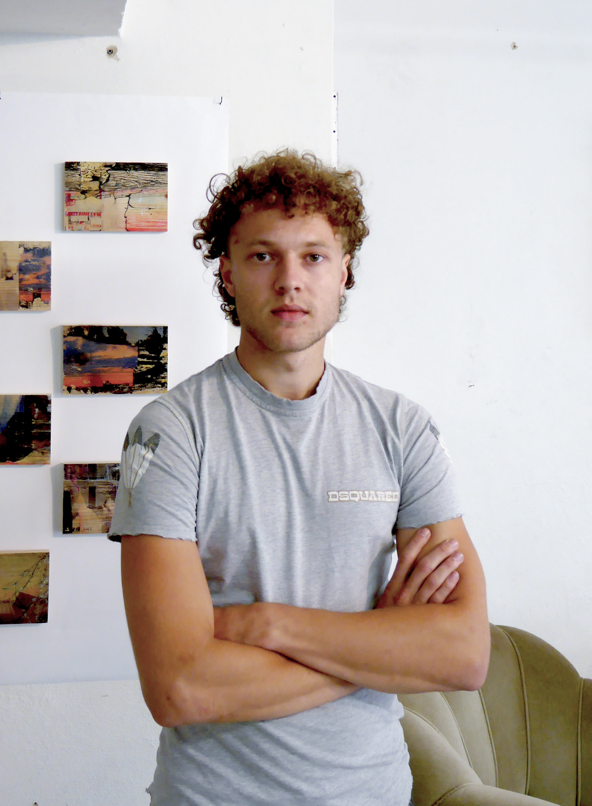

Soïc Kermarrec wurde 2004 in Leipzig geboren
und lebt und arbeitet in dieser Stadt als Künstler und
Architekturstudent.
In seiner Jugend wollte er den großen Mangaka nacheifern
und kam so zur Grafik mit Tinte und Feder. Als er 2025
nach Paris zog, fing er an, seine Eindrücke und
Erlebnisse in Farben auf die Leinwand zu bannen, was zu
seinem jetzigen Werk führte.
Er arbeitet intuitiv und stellt mit Tinte und Acryl, verschiedenen Fragmenten und Schrift Abhängigkeiten zwischen den einzelnen Elementen her. So entstehen visuelle Eindrücke, in denen sich komplexe und manchmal zufällige Zusammenhänge unserer subjektiv wahrgenommenen Realität widerspiegeln.
Vita
2023
AbiBac, Anton-Philipp-Reclam-Gymnasium, Leipzig
2023 – 2026
B.A. Architektur, HTWK Leipzig
2025 – 2026
Auslandsstudium ENSA PVS, Paris
2026
Ausstellung 8qm Paris
2026
Ausstellung 1+1+1
2026
Ausstellung "Im Krieg"
2026
Ausstellung Aerial&Art